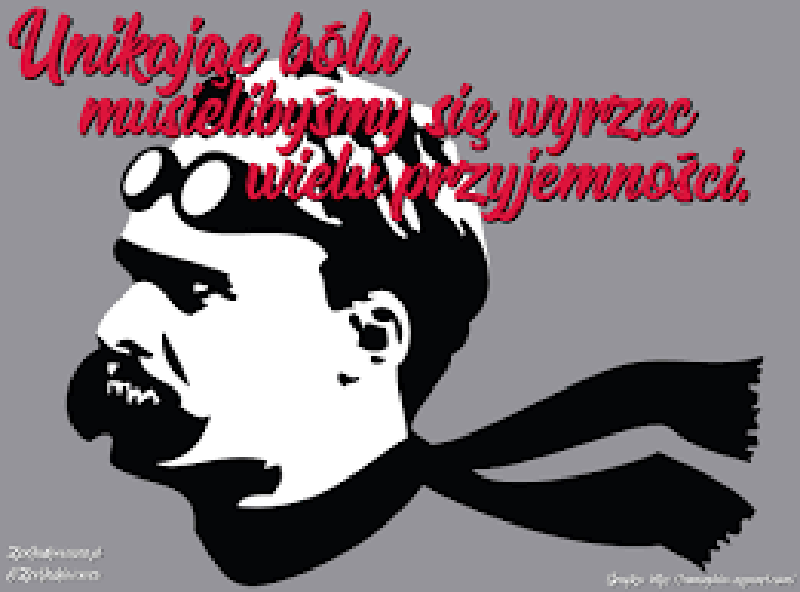

Ayn Rand była najpotężniejszą kobietą XX wieku. Dlaczego? Ponieważ stowrzyła swój własny nurt filozoficzny zwany Obiektywizmem i napisała co najmniej dwie książki – „Źródło” i „Atlas zbuntowany”, które miały kluczowy wpływ na wielu wymiataczy drugiej połowy XX i początku XXI wieku. Już po objęciu urzędu Donald J. TRUMP porównał się do głównego bohatera „Źródła” Howarda ROARKA. Były Sekretarz Stanu w administracji Trumpa – Rex TILLERSON rozsmakował się z kolej w „Atlasie zbuntowanym” – to jego ukochana książka. Były szef CIA, Mike POMPEO, były Sekretarz Pracy Andrew PUZDER czy spiker Izby Reprezentantów – Paul RYAN – wszyscy oni czytają RAND regularnie. Podobnie jak założyciel i były szef UBER’a Travis KALANICK, który jest jej wyznaczą do takiego stopnia, że fragment okładki „Atlasu” był jego avatarem na Twitterze. Steve JOBS i Steve WOZNIAK uznawali „Atlas zbuntowany” za jeden z swoich najważniejszych przewodników po życiu. Miliarder i właściciel klubu NBA Dallas MAVERICS, Mark CUBAN na cześć „Źródła” nazwał swój jacht, ponieważ: „Książka ta zachęciła mnie do myślenia jak indywidualista, do podejmowania ryzyka by osiągnąć cele oraz brania odpowiedzialności własne sukcesy jak i porażki.”„Atlas Zbuntowany” znajduje się również w TOP-20 książek polecanych przez Elona MUSKA
Właśnie dlatego Ayn Rand była najpotężniejszą oobietą XX wieku. Wychowała ona bowiem ludzi, którzy dzisiaj rządzą światem. Jej ideał człowieka – tak kobiety jak i mężczyzny – był bardzo prosty:
Człowiek racjonalny, wiedziony wyłącznie przez rozsądek
Niezależny, samodzielny i samowystarczalny
O ogromnym i głębokim poczuciu własnej wartości
„Kiedy rozsądek opuści człowieka, dość szybko przekonuje się on, że emocje są nie tylko kiepskim doradcą, ale również że prowadzą do jednej, dominującej emocji – TRWOGI. Szerzenie się wśród młodych ludzi narkomanii, pokazuje jak bardzo nie do wytrzymania jest wewnętrzny stan ludzi, których pozbawi się narzędzi poznania i którzy rozpaczliwie poszukują ucieczki od rzeczywistości – czyli ucieczki od przerażającej ich niemocy radzenia sobie z własnym życiem. Zwróć uwagę na na ich strach przez niezależnością i to obsesyjne dążenie do 'przynależności’, do podłączenia się do jakiejkolwiek grupy, kliki czy gangu. Większość z nich nigdy nie słyszała o jakiejkolwiek filozofii, (...) liczą zatem na to, że plemię powie im jak żyć"
"Czy człowiek jest istotą racjonalną, zdolną do radzenia sobie z rzeczywistością czy też, jak wielu woli, bezradną i bezbronną, ślepym wyrzutkiem, korkiem targanym falami wszechświata? Czy tu na Ziemi możliwe jest dla ludzi osiągnięcie szczęścia i cieszenie się życiem – czy też skazani jesteśmy na porażki i cierpienie? (...) Czy człowiek powinien postępować zgodnie z własnymi wartościami czy przekładać interesy innych ludzi ponad swoje? I: czy powinieneś dążyć do szczęścia czy składać się w ofierze?"
"Moja filozofia, w wielkim skrócie – mówi Ayn RAND – oparta jest o postrzeganie człowieka jako ISTOTY HEROICZNEJ, z jego WŁASNYM szczęściem jako moralnym życiowym kompasem, z produktywnością jako najwyższą formą szlachetności i rozumem jako jedynym absolutem. Chcę – zarówno w literaturze jak i filozofii – zdefiniować i przedstawić człowieka IDEALNEGO – ten specyficzny, konkretny obraz tego jakim człowiek taki powinien być. (…) W pewnym momencie zdałam sobie sprawę, że fundamentalnie nie zgadzam się ze wszystkimi istniejącymi systemami filozoficznymi – w szczególności z ich moralnymi zaleceniami."
I kontunuując:
"(…) Dodajmy do tego religijną moralność, która wmawia ludziom, że są gatunkiem gorszym. A przecież nie są. Z tego co nam wiadomo, to my stworzyliśmy najwyższą formę cywilizacji. Pomysł, by na wiarę zaakceptować istnienie jakiejś bliżej nie określonej siły wyższej, która jest od nas lepsza pod dosłownie każdym względem i do perfekcji której nie masz nawet po co aspirować, jest prostą i skuteczną drogą do kompleksu niższości i samoponiżenia.”
„Mój IDEAŁ człowieka robi rzeczy ŚWIADOMIE i dlatego, że uznał, iż to jest słuszne. W żadnym wypadku – bo to najwyższa obraza, nie robi czegoś 'bo poczuł taką potrzebę’. Jest jak najbardziej w porządku mieć odczucia i emocje, ale one mają być wynikiem naszych myśli a nie motorem naszych działań. Rozsądny człowiek nie powinien również przejmować się tym, co pomyślą sobie o nim inni – nie zmienia to faktu, że musi brać pod uwagę szacunek dla praw innych ludzi. Nie może oczekiwać i wymagać, żeby ktoś poświęcał się dla niego i na tej samej zasadzie nie powinien poświęcać się dla innych. Owszem, ma brać pod uwagę niezależność innych ludzi ale nie oznacza to, że ma brać na siebie za nich odpowiedzialność.”
Chodzi o to by po linii prostej, za pomocą rozumu, sięgać po to, co naprawdę cenisz i czego naprawdę chcesz. I od Ciebie zależy co to takiego będzie.
"Zapisane w amerykańskiej konstytucji prawo dążenia do szczęścia oznacza realnie, że człowiek ma prawo do określenia swoich własnych celów i wartości – i osiągania ich. Szczęście bowiem jest stanem świadomości wynikającym z życia zgodnego z własnymi zasadami. Bo cóż może być bardziej wartościowego? Szczęście nie oznacza chwilowej przyjemności czy oddawania się bezmyślnemu folgowaniu sobie. Szczęście oznacza potężne, głębokie, pozbawione poczucia winy poczucie własnej wartości i dumy ze swoich osiągnięć. Oznacza radość z życia, możliwą do osiągnięcia tylko dla człowieka racjonalnego, opierającego się o racjonalny moralny kod postępowania."
"Szczęście nie oznacza chwilowej przyjemności." - pomyśl o tym. Bo nie wszytsko co PRZYJEMNE czyni cię SZCZĘŚLIWYM.
Zaznacz odpowiedzi, które wedlug cieie uczynią cię SZCZĘŚLIWYM człowiekiem:

A teraz zobacz ten piękny fragmencik rozmowy pomiędzy RAND a Johnny CARSONEM:
– Ludzie powinni pracować na tyle, na ile pozwalają im ich możliwości. W żadnym wypadku nie chodzi o to, żeby zaharowywać się na śmierć. Ludzie mogą mieć bowiem w życiu również inne zainteresowania. Jednak jeśli pyta mnie pan, czy najważniejszym celem i pierwszą wartością ma być produktywność – to owszem, jak najbardziej. Bo jeśli człowiek nie chce być produktywnym – jest niemoralnym.
– Zdaje się, że kiedyś użyła pani terminu – emocjonalny pasożyt.
– Jeśli stawia innych ludzi ponad swoją produktywną karierę – ponad swój kreatywny umysł – to tak, jest emocjonalnym pasożytem.
– Czy pani w takim razie przywiązuje się emocjonalnie do ludzi, czy ma pani przyjaciół?
– Oczywiście.
– Jednak nie przedkłada pani ich interesu ponad swój?
– Nigdy nie dochodzi do tego typu zgrzytów, bo ja przyjaźnię się jedynie z racjonalnymi ludźmi. A między ludźmi racjonalnymi nie ma tego typu tarć.
– Co jednak zrobić z tymi, którzy, z dowolnego powodu, nie mogą być produktywnymi?
– Zostawić w świętym spokoju. Jeśli prawdą jest to, że z jakiegoś powodu nie są w stanie niczego wytwarzać, tym bardziej należy zapewnić więcej wolności tym, którzy produkują.
– Jednak niektórzy ludzie utrzymują, że pani spojrzenie na rozum prowadzi do czystego egoizmu, że nie jest oparte na zdrowych ludzkich relacjach i nie pozostawia miejsca na emocjonalne zaangażowanie.
– A to już zależy od rodzaju emocji. Czy wierzy pan w to że wszystkie emocje, z definicji, są koniecznie nieracjonalne? Bo ja nie. Człowiek winien być postępować zgodnie ze swoim rozumiem i jeśli wybierze dla siebie racjonalne wartości, nie grozi mu odczuwanie nieracjonalnych emocji. Bowiem jego emocje i jego umysł będą spójne. Twierdzę wręcz, że jedynie w pełni racjonalny człowiek może odczuwać głęboko i prawdziwie, bowiem nie ma on wewnętrznych konfliktów.”
I na koniec:
"ŚMIERĆ JEST NIEWAŻNA i NIEISTOTNA.
WAŻNA JEST JEDYNIE WIECZNOŚĆ.
A WIECZNOŚĆ JEST TERAZ.